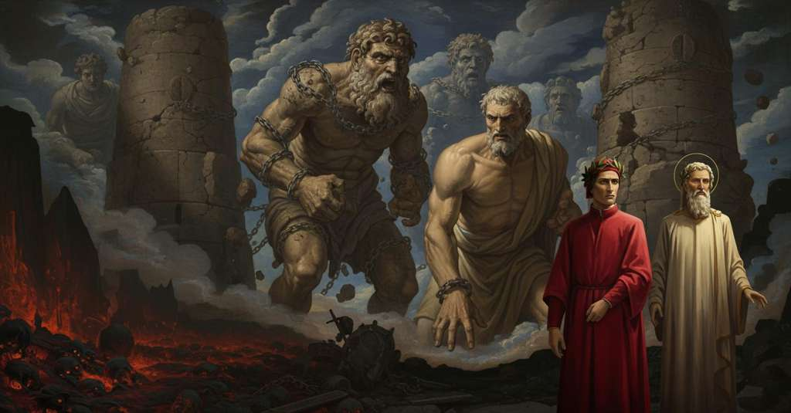

Inferno — Canto 31

Virgilio guida Dante dal vallone dell’ottava bolgia al pozzo dei giganti, dove Nembrotto e Fialte incatenati incutono terrore, e persuade il libero Anteo a deporli presso Cocito, nel fondo dell’Inferno. Virgil leads Dante from the valley of the eighth ditch to the pit of the giants, where the chained Nimrod and Ephialtes inspire terror, and persuades free Antaeus to set them down near Cocytus, at Hell’s bottom. ウェルギリウスはダンテを第八の濠の谷から巨人たちの井戸へ導き、そこで鎖につながれたネンブロットとフィアルテが恐怖を与えるなか、自由なアンテオスを説得して地獄の底のコキュトス近くへ二人を降ろさせる。
1
Una medesma lingua pria mi morse,
The same tongue first bit me,
同じ舌がまず私を噛み、
2
sì che mi tinse l’una e l’altra guancia,
so that it colored both one and the other cheek,
両の頬を染めさせたかと思うと、
3
e poi la medicina mi riporse;
and then the medicine it offered me;
次にその薬を与えてくれた。
4
così od’ io che solea far la lancia
thus I have heard that the lance of Achilles
かくして私は聞く、アキレウスとその父の槍が
5
d’Achille e del suo padre esser cagione
and of his father used to be the cause
かつて原因であったと、
6
prima di trista e poi di buona mancia.
first of a sad and then of a good gift.
まずは悲しい、次いで良い賜物の。
7
Noi demmo il dosso al misero vallone
We turned our back on the wretched little valley,
我らは惨めな谷間に背を向け、
8
su per la ripa che ’l cinge dintorno,
up along the bank that encircles it,
それを囲む土手に沿って登り、
9
attraversando sanza alcun sermone.
crossing without any speech.
何も語ることなく進んでいった。
10
Quiv’ era men che notte e men che giorno,
Here it was less than night and less than day,
そこは夜というには明るく、昼というには暗く、
11
sì che ’l viso m’andava innanzi poco;
so that my sight went forward little;
私の視界はほとんど先へは進まなかった。
12
ma io senti’ sonare un alto corno,
but I heard a high horn sound,
しかし私は高い角笛が鳴り響くのを聞いた、
13
tanto ch’avrebbe ogne tuon fatto fioco,
so loud it would have made any thunder faint,
いかなる雷鳴をもかすませるほどに。
14
che, contra sé la sua via seguitando,
which, following its path back toward itself,
その音は、こちらに向かってその道筋をたどり、
15
dirizzò li occhi miei tutti ad un loco.
directed my eyes entirely to one place.
私の目をことごとく一つの場所へと向けさせた。
16
Dopo la dolorosa rotta, quando
After the sorrowful rout, when
悲痛な敗走の後、シャルルマーニュが
17
Carlo Magno perdé la santa gesta,
Charlemagne lost the holy enterprise,
聖なる軍勢を失った時、
18
non sonò sì terribilmente Orlando.
Roland did not sound so terrible a blast.
オルランドもかくも恐ろしくは吹かなかった。
19
Poco portäi in là volta la testa,
A short while I held my head turned that way,
私がそちらに頭を向けて間もなく、
20
che me parve veder molte alte torri;
when I seemed to see many high towers;
多くの高い塔が見えるように思われた。
21
ond’ io: «Maestro, dì, che terra è questa?».
so I: “Master, tell me, what city is this?”.
そこで私は言った。「師よ、教えてください、ここはどの地ですか？」。
22
Ed elli a me: «Però che tu trascorri
And he to me: “Because you traverse
すると彼は私に言った。「そなたが闇の中を
23
per le tenebre troppo da la lungi,
through the shadows from too far off,
あまりに遠くから進むゆえに、
24
avvien che poi nel maginare abborri.
it happens that you then err in your imagining.
想像において過ちを犯すのだ。
25
Tu vedrai ben, se tu là ti congiungi,
You will see well, if you arrive there,
そなたもそこに着けばよく分かるだろう、
26
quanto ’l senso s’inganna di lontano;
how much the sense is deceived by distance;
感覚がいかに遠くからでは欺かれるかを。
27
però alquanto più te stesso pungi».
therefore spur yourself on a little more.”
だから、もう少し自身を奮い立たせるがよい」。
28
Poi caramente mi prese per mano
Then he took me lovingly by the hand
それから彼は優しく私の手を取り、
29
e disse: «Pria che noi siam più avanti,
and said: “Before we go further,
言った。「我らがさらに進む前に、
30
acciò che ’l fatto men ti paia strano,
so that the fact may seem less strange to you,
その事実がそなたに奇妙に思われぬように、
31
sappi che non son torri, ma giganti,
know that they are not towers, but giants,
知るがよい、あれは塔ではなく、巨人であり、
32
e son nel pozzo intorno da la ripa
and they are in the well around the bank
井戸の中、土手の周りにいるのだ、
33
da l’umbilico in giuso tutti quanti».
from the navel down, all of them.”
臍から下は、そのすべてが」。
34
Come quando la nebbia si dissipa,
As when the fog dissipates,
霧が晴れる時、
35
lo sguardo a poco a poco raffigura
the sight little by little re-forms
視線が次第に形を捉えるように、
36
ciò che cela ’l vapor che l’aere stipa,
that which the vapor that crowds the air conceals,
大気を満たす蒸気が隠していたものを、
37
così forando l’aura grossa e scura,
so piercing the thick and dark air,
かくして、濃く暗い大気を貫き、
38
più e più appressando ver’ la sponda,
approaching more and more toward the bank,
ますます岸辺に近づくにつれて、
39
fuggiemi errore e cresciemi paura;
my error fled from me and my fear grew;
私から誤りは去り、恐怖は増した。
40
però che, come su la cerchia tonda
for, as on its round rampart
というのも、その丸い城壁の上に
41
Montereggion di torri si corona,
Monteriggioni is crowned with towers,
モンテレッジォーニが塔を戴くように、
42
così la proda che ’l pozzo circonda
so the bank that surrounds the well
かくして井戸を囲むその土手は、
43
torreggiavan di mezza la persona
was turreted with half their bodies
その半身で塔のようにそびえ立っていた、
44
li orribili giganti, cui minaccia
by the horrible giants, whom Jupiter
恐るべき巨人たちが。彼らを天のユピテルは
45
Giove del cielo ancora quando tuona.
still threatens from heaven when he thunders.
今なお雷鳴を轟かせて脅かすのだ。
46
E io scorgeva già d’alcun la faccia,
And I could already make out the face of one,
そして私はすでに誰かの顔を認めていた、
47
le spalle e ’l petto e del ventre gran parte,
the shoulders and the chest and a large part of the belly,
両肩と胸と腹の大部分を、
48
e per le coste giù ambo le braccia.
and down along the ribs both of the arms.
そして脇腹に沿って下がる両腕を。
49
Natura certo, quando lasciò l’arte
Nature, certainly, when she left off the art
自然は確かに、その技術を捨てたとき
50
di sì fatti animali, assai fé bene
of making such animals, did very well
このような動物を作る、実に善きことをした
51
per tòrre tali essecutori a Marte.
to take away such executors from Mars.
マルスからこのような執行者を奪い取るために。
52
E s’ella d’elefanti e di balene
And if of elephants and of whales
そしてもし彼女が象や鯨について
53
non si pente, chi guarda sottilmente,
she does not repent, he who looks subtly
後悔しないのなら、鋭く見る者は、
54
più giusta e più discreta la ne tene;
holds her for it more just and more discreet;
彼女をより正しく、より賢明だと見なす。
55
ché dove l’argomento de la mente
for where the argument of the mind
なぜなら、知性の論理が
56
s’aggiugne al mal volere e a la possa,
is added to ill will and to power,
悪しき意志と力に加わると、
57
nessun riparo vi può far la gente.
no one can make any defense against it.
人々はそこにいかなる防御もできないからだ。
58
La faccia sua mi parea lunga e grossa
His face seemed to me long and large
その顔は私には長く大きく見えた
59
come la pina di San Pietro a Roma,
as the pinecone of Saint Peter's in Rome,
ローマのサン・ピエトロの松かさのように、
60
e a sua proporzione eran l’altre ossa;
and in proportion to it were the other bones;
そしてその比率に応じて他の骨格もあった。
61
sì che la ripa, ch’era perizoma
so that the bank, which was a loincloth
だから、腰布となっていた岸壁が
62
dal mezzo in giù, ne mostrava ben tanto
from his middle down, showed so much of him
真ん中から下を、彼は十分にそれだけを現していた
63
di sovra, che di giugnere a la chioma
above, that to reach his hair
その上方に、その髪に届くには
64
tre Frison s’averien dato mal vanto;
three Frisians would have made a bad boast;
三人のフリジア人でも自慢はできまい。
65
però ch’i’ ne vedea trenta gran palmi
because I saw thirty great palms of him
なぜなら私はそこから三十グラン・パルミを見ていたからだ
66
dal loco in giù dov’ omo affibbia ’l manto.
from the place down where a man buckles his cloak.
人が外套を留める場所から下へ。
67
«Raphèl maì amècche zabì almi»,
"Raphèl maì amècche zabì almi,"
「ラフェル・マイ・アメッケ・ザビ・アルミ」、
68
cominciò a gridar la fiera bocca,
began to cry the savage mouth,
と、その獰猛な口が叫び始めた、
69
cui non si convenia più dolci salmi.
for which no sweeter psalms were fitting.
それにはより甘美な詩篇はふさわしくなかった。
70
E ’l duca mio ver’ lui: «Anima sciocca,
And my leader to him: "Foolish soul,
そして私の導き手は彼に向かって言った。「愚かな魂よ、
71
tienti col corno, e con quel ti disfoga
keep to your horn, and with that vent yourself
その角笛にすがり、それで気を晴らすがよい
72
quand’ ira o altra passïon ti tocca!
when rage or other passion touches you!
怒りか他の情熱がお前を襲うときには！
73
Cércati al collo, e troverai la soga
Search at your neck, and you will find the strap
首を探してみよ、そうすれば紐が見つかるだろう
74
che ’l tien legato, o anima confusa,
that keeps it tied, o confused soul,
それを結わえている、おお、混乱した魂よ、
75
e vedi lui che ’l gran petto ti doga».
and see how it crosses your great chest."
そして見よ、それがお前の大きな胸を横切っているのを」。
76
Poi disse a me: «Elli stessi s’accusa;
Then he said to me: "He accuses himself;
それから私に言った。「彼は自らを告発している。
77
questi è Nembrotto per lo cui mal coto
this is Nimrod, through whose evil thought
これこそネンブロット、その邪悪な企てゆえに
78
pur un linguaggio nel mondo non s’usa.
one single language is not used in the world.
世にただ一つの言語が使われなくなったのだ。
79
Lasciànlo stare e non parliamo a vòto;
Let us leave him be and not speak in vain;
彼を放っておき、無駄に話すのはやめよう。
80
ché così è a lui ciascun linguaggio
for so to him is every language
なぜなら、彼にとってあらゆる言語は
81
come ’l suo ad altrui, ch’a nullo è noto».
as his is to others, which is known to no one."
彼の言葉が他者にとってそうであるように、誰にも知られていないのだから」。
82
Facemmo adunque più lungo vïaggio,
We made then a longer journey,
我々はそこで、より長い旅をした、
83
vòlti a sinistra; e al trar d’un balestro
turned to the left; and at a crossbow's shot
左に向かって。そして弩の一射ほどの距離で
84
trovammo l’altro assai più fero e maggio.
we found the next one, far more fierce and large.
我々はもう一人を、はるかに獰猛で巨大な者を見つけた。
85
A cigner lui qual che fosse ’l maestro,
To bind him, whoever was the master,
彼を縛り付けたのがいかなる職人であったか、
86
non so io dir, ma el tenea soccinto
I cannot say, but he held girded
私には言えないが、彼は締め付けられていた
87
dinanzi l’altro e dietro il braccio destro
the left arm in front and the right arm behind him
前にはもう片方の腕を、後ろには右腕を
88
d’una catena che ’l tenea avvinto
with a chain that held him shackled
一本の鎖によって、それは彼を縛り付けていた
89
dal collo in giù, sì che ’n su lo scoperto
from the neck down, so that on the uncovered part
首から下へ、だから露出した部分に
90
si ravvolgëa infino al giro quinto.
it wound itself down to the fifth coil.
それは五周目まで巻き付いていた。
91
«Questo superbo volle esser esperto
"This proud one wished to test
「この傲慢な者は、試みたかったのだ
92
di sua potenza contra ’l sommo Giove»,
his power against the highest Jove,"
その力を、至高のユピテルに対して」、
93
disse ’l mio duca, «ond’ elli ha cotal merto.
said my leader, "whence he has such a reward.
と私の導き手は言った、「ゆえに彼はこのような報いを得ている。
94
Fïalte ha nome, e fece le gran prove
Ephialtes is his name, and he made the great test
フィアルテがその名で、大いなる試みをした
95
quando i giganti fer paura a’ dèi;
when the giants made the gods afraid;
巨人たちが神々に恐怖を与えたときに。
96
le braccia ch’el menò, già mai non move».
the arms that he plied, he nevermore moves."
彼が振るった腕は、もはや二度と動かぬ」。
97
E io a lui: «S’esser puote, io vorrei
And I to him: "If it may be, I would wish
そして私は彼に言った。「もし叶うなら、私は望みます
98
che de lo smisurato Brïareo
that of the immense Briareus
あの途方もないブリアレオスの姿を
99
esperïenza avesser li occhi mei».
my eyes might have experience."
私のこの目で見届けたいと」。
100
Ond’ ei rispuose: «Tu vedrai Anteo
Whereupon he replied: "You will see Antaeus
すると彼は答えた。「お前はアンテオスを見るだろう
101
presso di qui che parla ed è disciolto,
near here, who speaks and is unbound,
この近くで、彼は話せ、そして縛られていない、
102
che ne porrà nel fondo d’ogne reo.
who will place us in the bottom of all wickedness.
彼が我らをあらゆる罪人の底へと運んでくれるだろう。
103
Quel che tu vuo’ veder, più là è molto
The one you want to see is much farther on,
お前が見たい者は、もっとずっと向こうにいて
104
ed è legato e fatto come questo,
and he is bound and made like this one,
この者と同じように縛られ、同じ姿をしている、
105
salvo che più feroce par nel volto».
except he seems more ferocious in the face."
ただ顔つきはもっと獰猛に見えるが」。
106
Non fu tremoto già tanto rubesto,
Never was an earthquake so violent
いかなる地震もこれほど激しくはなかった、
107
che scotesse una torre così forte,
that it shook a tower so strong,
あれほど頑強な塔を揺るがすほどには、
108
come Fïalte a scuotersi fu presto.
as Ephialtes was quick to shake himself.
フィアルテが素早く身を震わせたようには。
109
Allor temett’ io più che mai la morte,
Then I feared death more than ever,
その時私はかつてなく死を恐れた、
110
e non v’era mestier più che la dotta,
and there was no need for more than the fear,
そして恐怖だけで十分だっただろう、
111
s’io non avessi viste le ritorte.
if I had not seen the chains.
もし私がその鎖を見ていなかったならば。
112
Noi procedemmo più avante allotta,
We proceeded further on then,
我らはその時さらに先へと進み、
113
e venimmo ad Anteo, che ben cinque alle,
and came to Antaeus, who a good five ells,
アンテオスのもとへたどり着いた。彼は実に五アーレンもの
114
sanza la testa, uscia fuor de la grotta.
without his head, emerged from the pit.
高さが、頭を除いて、穴から出ていた。
115
«O tu che ne la fortunata valle
"O you who in the fortunate valley
「おお、かの幸運な谷において
116
che fece Scipïon di gloria reda,
that made Scipio heir to glory,
それがスキピオを栄光の継承者となし、
117
quand’ Anibàl co’ suoi diede le spalle,
when Hannibal with his men turned his back,
ハンニバルとその軍勢が背を向けた時、
118
recasti già mille leon per preda,
once brought a thousand lions as prey,
かつて千頭もの獅子を獲物として持ち帰った者よ、
119
e che, se fossi stato a l’alta guerra
and who, if you had been at the high war
そして、もしお前があの大きな戦に加わっていたなら
120
de’ tuoi fratelli, ancor par che si creda
of your brothers, it still seems to be believed
お前の兄弟たちの、今なお信じられているように
121
ch’avrebber vinto i figli de la terra:
that the sons of the earth would have won:
大地の息子たちが勝利していたであろう者よ、
122
mettine giù, e non ten vegna schifo,
set us down, and let it not disgust you,
我らを下へ降ろしてくれ、そして嫌悪感を抱くことなく、
123
dove Cocito la freddura serra.
where Cocytus locks in the cold.
コキュートスが冷気を閉じ込める場所へ。
124
Non ci fare ire a Tizio né a Tifo:
Do not make us go to Tityus or to Typhon:
我らをティテュオスやテュポンのもとへ行かせるな。
125
questi può dar di quel che qui si brama;
this one can give that which is longed for here;
この者は、ここで渇望されるものを与えることができる。
126
però ti china e non torcer lo grifo.
therefore bend down and do not twist your snout.
それゆえ、身を屈め、その鼻面をしかめるな。
127
Ancor ti può nel mondo render fama,
He can yet restore your fame in the world,
彼はまだ地上でお前に名声をもたらすことができる、
128
ch’el vive, e lunga vita ancor aspetta
for he lives, and still expects a long life
なぜなら彼は生きており、まだ長い人生を待っているのだから
129
se ’nnanzi tempo grazia a sé nol chiama».
if grace does not call him to itself before his time."
もし恩寵が時より早く彼を呼び寄せなければ」。
130
Così disse ’l maestro; e quelli in fretta
Thus said the master; and he in haste
このように師は言った。すると彼は急いで
131
le man distese, e prese ’l duca mio,
stretched out his hands, and took my guide,
両手を伸ばし、私の導き手をつかんだ、
132
ond’ Ercule sentì già grande stretta.
from which Hercules once felt a great grip.
その手でかつてヘルクレスは強大な締め付けを感じたのだ。
133
Virgilio, quando prender si sentio,
Virgil, when he felt himself being taken,
ウェルギリウスは、自分がつかまれるのを感じると、
134
disse a me: «Fatti qua, sì ch’io ti prenda»;
said to me: "Come here, so that I may take you";
私に言った。「こちらへ来い、私がお前をつかめるように」。
135
poi fece sì ch’un fascio era elli e io.
then he made it so that he and I were one bundle.
そして彼は、自分と私が一つの束になるようにした。
136
Qual pare a riguardar la Carisenda
As the Garisenda appears to one looking at it
カリセンダの塔を見上げるように、
137
sotto ’l chinato, quando un nuvol vada
from beneath the leaning side, when a cloud passes
その傾いた側の下から、雲がその上を
138
sovr’ essa sì, ched ella incontro penda:
over it so that it seems to lean the opposite way:
通り過ぎて、塔が反対側に傾いて見える時、
139
tal parve Antëo a me che stava a bada
such seemed Antaeus to me, who was waiting
そのようにアンテオスは私には見えた。私は彼が
140
di vederlo chinare, e fu tal ora
to see him bend, and it was such a moment
身を屈めるのを見ようと待っていたが、その時は
141
ch’i’ avrei voluto ir per altra strada.
that I would have wished to go by another road.
別の道を行きたかったほどだった。
142
Ma lievemente al fondo che divora
But gently to the bottom that devours
しかし彼は軽々と、喰らう底へと
143
Lucifero con Giuda, ci sposò;
Lucifer with Judas, he placed us;
ルチフェロとユダを、我らを置いた。
144
né, sì chinato, lì fece dimora,
nor, so bent, did he make a delay there,
そして、そう身を屈めたまま、そこに留まることなく、
145
e come albero in nave si levò.
and like a mast on a ship he raised himself up.
船の帆柱のように立ち上がった。